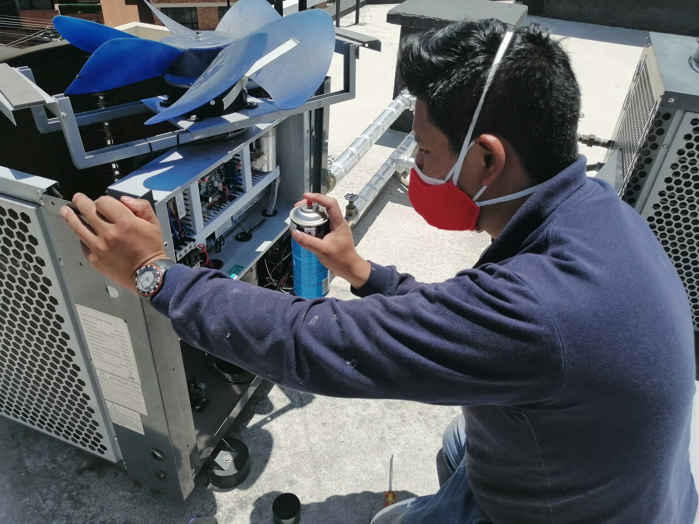
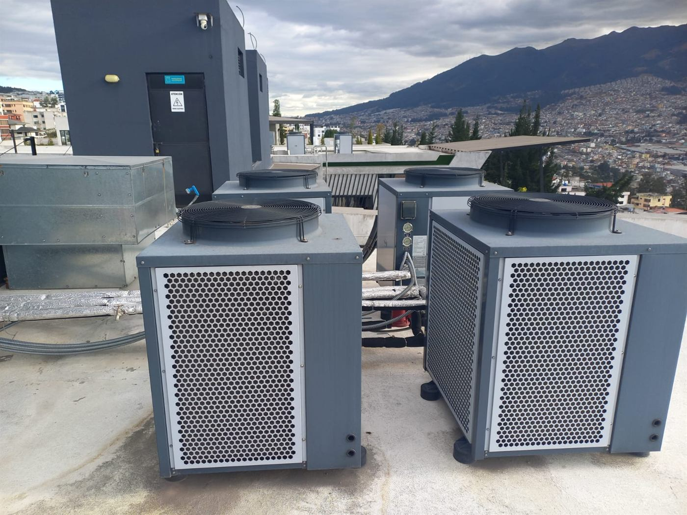
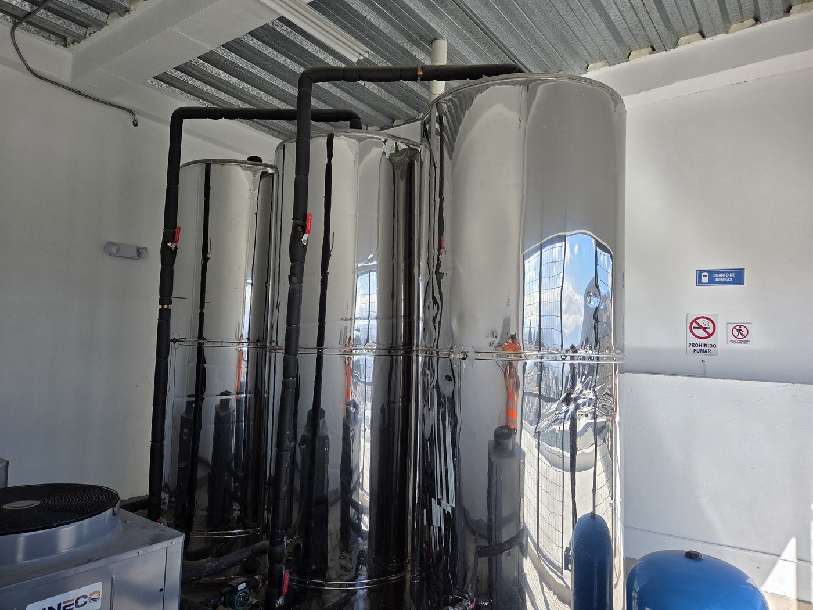
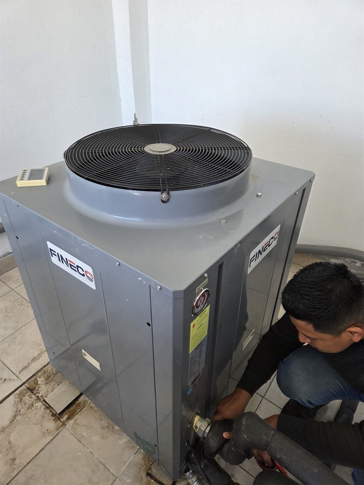
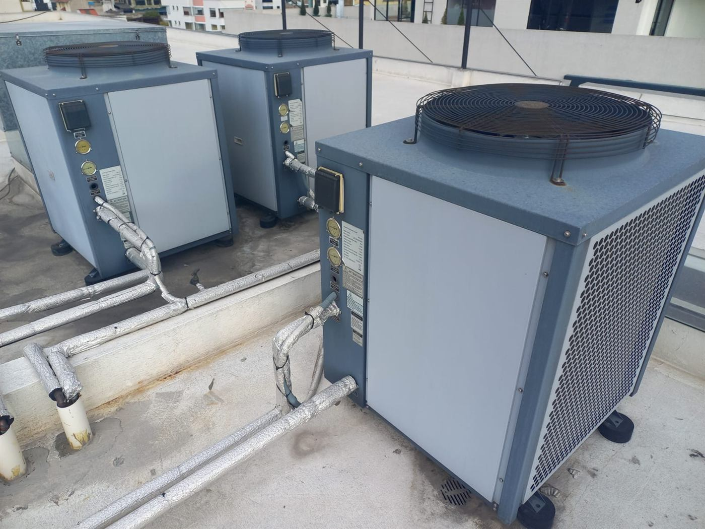
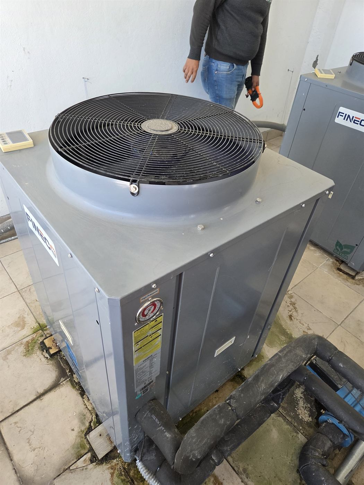
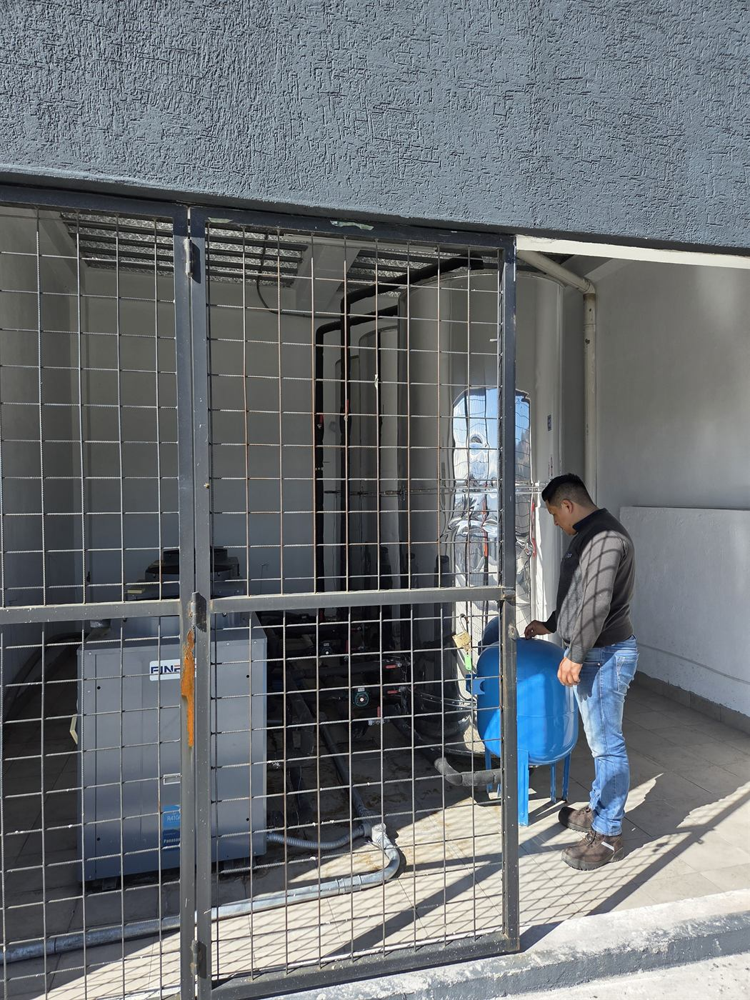

El agua demora en calentarse
El sistema tarda más de lo habitual en alcanzar la temperatura, o no la sostiene durante las horas de mayor consumo.
Servicio técnico en Quito
Damos mantenimiento y diagnóstico a bombas de calor destinadas a agua caliente sanitaria, climatización y calentamiento de piscinas, con técnicos propios y equipo en sitio.
Si tiene a mano la marca y el modelo del equipo, ayuda. Si no, igual coordinamos la visita.

Estas señales orientan la consulta, pero no determinan por sí solas la causa. Eso se define en sitio, con el equipo a la vista.
El sistema tarda más de lo habitual en alcanzar la temperatura, o no la sostiene durante las horas de mayor consumo.
El controlador muestra un código o una alerta. Conviene anotar cuál es, a qué hora aparece y con qué frecuencia.
La unidad funciona durante períodos inusualmente largos, o arranca y para con más frecuencia que antes.
Un sonido que antes no estaba puede venir del ventilador, del compresor o de la parte hidráulica. Se revisa en sitio.
Agua o humedad alrededor de tuberías, conexiones o acumuladores. Conviene revisarlo antes de que crezca.
Si no hay registro del último mantenimiento, o pasó más de un año, la revisión sirve para saber en qué estado está.
Atendemos bombas de calor en las tres aplicaciones que se usan habitualmente en Quito.
Es el caso más frecuente en edificios y conjuntos: la bomba de calor alimenta acumuladores que abastecen a todos los departamentos. Se revisan la unidad exterior, el control, las conexiones accesibles y el circuito hidráulico aislado.
Bombas de calor que forman parte de un sistema de climatización. El alcance depende del modelo, de cómo esté configurado el sistema y del acceso disponible el día de la visita.
Bombas de calor que sostienen la temperatura del agua de una piscina. La revisión se define según el equipo, su instalación hidráulica y el control disponible.
No es una lista idéntica para todos los equipos: se ajusta al fabricante, al modelo, a la aplicación y al estado que se encuentra.
Ningún componente se declara dañado solo por una alarma o una fotografía. Primero se comprueba en sitio.
Todas las fotografías corresponden a equipos atendidos por ISIYER. No usamos imágenes de catálogo.






El alcance se acuerda antes de intervenir y no se amplía sin su autorización.
El informe se limita a lo que se revisó. Lo que no se evaluó no se califica.
Dentro de lo revisado no se identificó una necesidad inmediata.
Hay una condición que conviene programar y atender, sin urgencia.
Hay una condición que requiere atención prioritaria.
Un sistema centralizado de agua caliente afecta a todos los departamentos a la vez. El informe registra lo observado, separa lo urgente de lo programable y acompaña la recomendación con una proforma, para que usted pueda sustentar el gasto ante la directiva o la asamblea.
Recibimos solicitudes en Quito y sectores de los valles, según coordinación, ubicación e identificación del equipo.
Se parecen en el nombre y no son lo mismo. Conviene aclararlo antes de pedir la visita.
Transfiere energía térmica para calentar agua o para participar en un sistema de climatización. Es de lo que trata esta página.
Mueve o presuriza el agua. Si su problema es falta de abastecimiento, baja presión, cisterna o sistema hidroneumático, ese es otro servicio: bombas de agua e hidroneumáticos.
Cubre la revisión inicial del sistema por el que usted nos contactó. Es gratuita y sin compromiso. Si el técnico observa otros sistemas en el sitio, le pide autorización antes de evaluarlos; si usted no autoriza, el alcance no cambia.
Agua caliente sanitaria, climatización y calentamiento de piscinas.
Sí. El diagnóstico es el paso previo: se revisa el equipo, sus controles y sus condiciones reales de operación para saber qué está pasando, antes de proponer cualquier trabajo. De ahí sale el informe de semaforización.
Depende del fabricante, del modelo, de las horas de funcionamiento, del ambiente, de la aplicación y del historial del equipo. No corresponde fijar una frecuencia única sin revisar esos datos. La visita inicial permite proponer una periodicidad acorde.
El sector, la aplicación del equipo, la señal que observó y, si los tiene a mano, la marca y el modelo. Una fotografía por fuera ayuda. Si no tiene ningún dato, igual coordinamos la visita.
El informe de semaforización se entrega dentro de las 24 horas siguientes a la visita. Cuando el trabajo recomendado requiere repuestos, el precio de esos repuestos puede tomar más tiempo, porque depende de la cotización con proveedores. En ese caso se lo indicamos.
No. El informe se limita a lo que efectivamente se revisó. Los sistemas que no se evaluaron no se califican ni se dan por correctos.
Los trabajos autorizados se entregan con garantía técnica escrita de 6 meses, limitada al alcance ejecutado y a las condiciones indicadas en el documento.
Atendemos Quito urbano, el Valle de Los Chillos, Cumbayá, Tumbaco y sectores cercanos del Distrito Metropolitano. Fuera de esa zona, consúltenos y le confirmamos.
Un sistema de agua caliente centralizado suele combinar equipos hidráulicos, eléctricos y de control.
Antes de aprobar un gasto ante una directiva o una asamblea conviene saber a quién se contrata. Estos son nuestros respaldos.
Atendemos exclusivamente en las instalaciones del cliente: vamos al edificio, al conjunto o al local. Es nuestro modelo de trabajo.
Cuéntenos qué observó y coordinamos la visita técnica gratuita del sistema reportado.